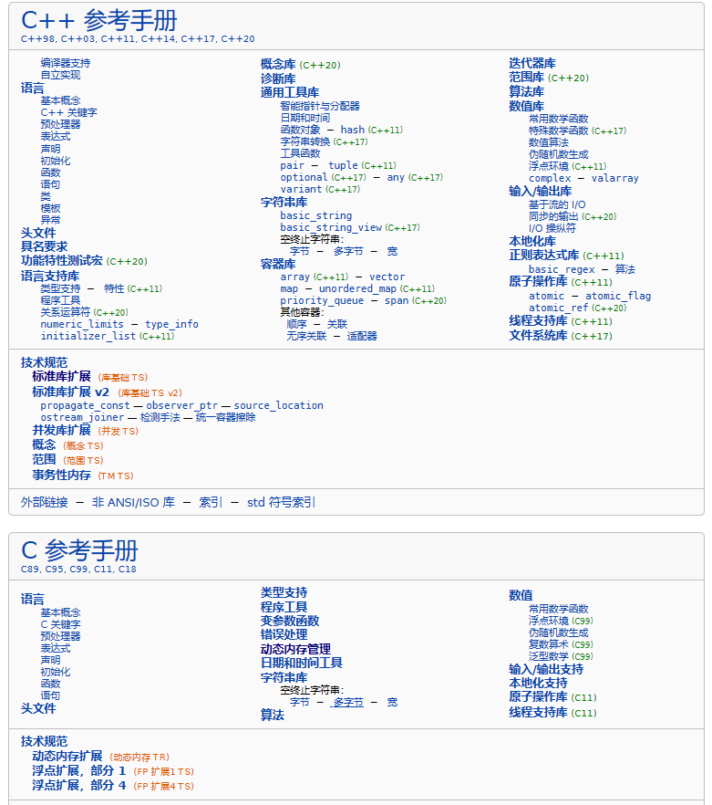
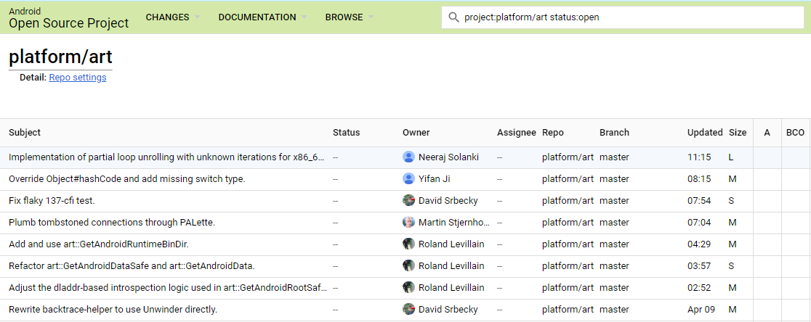
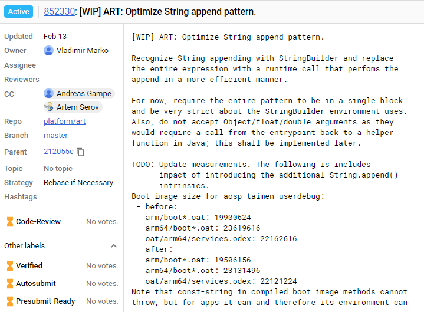

你好，我是张绍文。专栏更新至今，转眼间最后一个模块“架构演进”也已经 更新完了。从“Android 开发高手课”筹备到现在将近的八个月里，非常感谢我们的学习委员孙鹏飞，不管是文章答疑还是练习 Sample，鹏飞为这个专栏付出了太多太多，这里再次衷心地跟他说一声谢谢。
无论是我还是鹏飞，在写这个专栏的同时，也是重塑自身知识架构的过程。在专栏的最后一篇文章，我特意邀请鹏飞跟大家分享他的学习心得，也算是跟大家做一个小小的告别。鹏飞对于 Android 系统框架、虚拟机、Linux 等底层知识非常熟悉，那他是如何做到的呢？不得不说的是，鹏飞是一个非常自律（+ 宅）的人，拥有坚持每天早上 7 点钟起床学习一个半小时的可怕技能。
最近鹏飞也准备奔向新的工作岗位，在此也祝愿他在新岗位上能够发挥所长。接下来我们一起来听听鹏飞学习专栏的心得和思考。
大家好，我是孙鹏飞。“Android 开发高手课”接近尾声，今天我来从一个学习者的角度，对专栏做一下总结。专栏涵盖了 Android 开发的方方面面的知识，有技术干货、心得体会、问题答疑和部分科普性质的文章，从内容上来说和平时大家看到的教程不太一样，没有过多介绍 Android 基础，更多的是提供新的思路和分享经验。很多同学感觉学习比较吃力，其实我也是如此，在开始准备这门课程的时候，很多东西也是从零开始学起。对于一个新的概念，从模糊到清晰的过程不会那么容易，它可能涉及 Android 和 Linux 很多细枝末节的知识点，需要阅读大量资料给予支撑才能理解。
下面我就总结一下我学习专栏的过程和一些思考，希望对你有所启发。
关于“高手课”的思考
最近我了解到一些同学对 C++ 和 Linux 感觉不知道如何入手，这里说一下我的学习过程以及相关的学习资料。你可以跟着《C++ Primier Plus》学习一下基本语法和标准库里的函数使用，比如字符串操作、内存分配、I/O 操作等，这里有一个很好的网站学习 C/C++ 语言，包括最新的特性都有介绍。

Linux 应用开发的部分，可以一步步的参考《UNIX 环境高级编程》这本书，熟悉一遍标准 I/O 库、系统数据文件和信息、进程环境、进程控制、进程关系、信号、线程、线程控制、守护进程，以及各种 I/O、进程间通信、网络 IPC 的使用。同时也可以参考《Linux/UNIX 系统编程手册》，这本书相对介绍得更详细一些。在了解了 Linux 应用开发相关内容后，可以深入了解一下 Linux 内核相关的知识，我推荐《Linux 技术内幕》，这本书是国人写的，语言相对于一些翻译书要通顺一些，而且还有大量的图解；缺点是由于篇幅限制，有一部分内容没有介绍。
从专栏中你可以看到有些内容涉及 ARM 的汇编，ARM 的汇编资料相对少一些，而且实践起来不是很方便，这里推荐一个网站Writing ARM Assembly，可以学习到基本的汇编操作。关于实践可以使用VisUAL工具来进行实验，这个工具可以逐步执行并可以实时观察寄存器和内存里的值。关于汇编相关的内容，我认为更多的时候只需要看懂即可，在实际中使用的地方可能并不是很多。
Android 的更新迭代是很快的，在快速的更新中我们需要保持对 Android 新特性的了解，还要掌握兼容问题的处理方法，。现在官方文档更新的速度还是很快的，中文文档更新速度也很快，大部分功能和 API 新特性的描述都可以在 Android 官网上找到很详细的文档，比如Android Q 功能和 API ，并且每个版本官方都会提供很详细的API 差异报告，这个报告将修改、新增的 API 都统计在一起，我们可以在这个表里发现一些新功能。

关于虚拟机方面的更新，我更多是参考官方的提交记录来查看。具体可以看Android Gerrit，这里有每一条提交记录，并且可以查看很详细的 Code Diff，提交记录的描述一般都很清晰，所以可以很好的帮助我们理解代码，也可以发现一些新的工具和功能。

专栏学习心得
我经常听到很多同学说一个技术很难，其实我觉得大多时候不是技术难，而是应该说复杂。技术大多都是演进而来，其实这种演进和我们业务需求迭代的过程很类似。比如内存管理，从固定分区、动态分区机制到分段机制，然后发展成现在的分页机制，硬件也随之演进，都算是一个迭代过程。理解分页机制其实不难，但这个知识点所涉及的内容就很繁琐和复杂了，比如了解系统如何管理内存需要了解内存布局，就会涉及内存划分；内存划分又涉及 CPU 的运行模式，然后是物理内存和虚拟内存如何映射，会涉及页表的翻译、物理页面的分配和释放、伙伴系统算法；为了解决伙伴系统的内存碎片化问题，又衍生出迁移类型等。
这一系列涉及的内容就非常复杂，但每一项单拆出来去看，一层层的去学习和补充，就会感觉容易很多。这一点其实在业务开发上也有体现，我们刚接手一个复杂的业务，代码庞大，注释和文档都很少，但在一段时间后你还是会对整个业务有或多或少的认识，在接到新的业务的时候也没有觉得难到无从下手，顶多是觉得复杂。底层的系统、框架也是如此，这是一个由点到面的过程。
忙碌状态下的学习
鸿洋写过一篇文章《嗷嗷加班，如何保持学习能力》，讲在繁忙的工作状态下如何保持学习，我看过之后也很有感触。在平时零散的时间里我们看到一篇技术文章，并不是阅读收藏后就结束了，这样你可能会在很短的时间里就忘掉了文章的内容。他将阅读一篇文章分成以下几个步骤：提取这篇文章要解决的问题；然后概括一下涉及的技术点；提取重点内容，比如问题发生的缘由、有哪几种解决方法。总体来说，这个方法是为了在短时间内提取出重点内容，然后记录下来后面再进行复习。所以我们都需要多记录、多复习，可以培养使用一些工具来帮助自己养成习惯。
逃离舒适区
并不是说换一个更忙碌的工作就是逃离舒适区，而是在平时工作和学习过程中保持一种焦虑感，这种焦虑感不是迷茫和恐慌，而是清晰的认识到自己的不足，然后在工作和业余的时间里填补自己，当你集中注意力攻克一个难点的时候，你会发现这是一件有趣的事。我身边有很多同学都在持续的学习，每个人都有不同的目标，比如学到什么程度、应用到什么地方等，需要一定的压力才能产生比较好的效果，否则很容易迷失丢掉重点。我以前所在的团队有一个学习计划表，每个同学调研一个方向，每周周会的时候都会抽出一定时间去做技术分享，我觉的这是一个很好的方法，人在有一定紧张情绪的情况下注意力会相当集中，这个和考试前、面试前学习效率会很高的道理是一样的。不过我们也不能太过焦虑，我经常会有焦虑感，我的解决方法是定制计划，半年或者一年，在一段时间专注完成一件事，你会看到自己成长了很多。
刻意练习
也许我们在公司里平时做的业务需求都是缝缝补补，并没有涉及很复杂的内容，大量重复的工作会让人觉得无法提升自己的技术。而自己平时自己学到的知识在一定时间之后可能就生疏了，而且有些技术可能从原理上看相对简单，但在实现的过程中会遇到各种问题，比如插件化和热修复，这样的技术如果不上手去实践就只能停留在理论层面。对于这种情况，可以采用一种刻意练习的方法，在知晓原理后自己尝试去实现一个类似的框架，在这个过程中你会得到比阅读源码和文章更多的实践经验，可以大大加深对一个知识的理解，也可以锻炼自己的框架设计能力。
阅读源码
别人写的源码分析文章我一般看的比较少，除非是自己遇到了很难理解的部分，大部分的内容都可以直接在代码里获取到。而且很多分析的文章很少，比如 Inline Hook ，但是框架实现的比较多，那么就只能从代码里获取相关内容。针对一个功能的框架可以去找一些相同功能的多个框架进行对比，看一下实现方式是否有不同之处，同时比较一下每个实现方式的优缺点，并记录一下每个框架所使用的技术。在理解一个框架的实现后，还是建议你去自己写一个类似的框架，因为在自己的实现过程中会遇到各种问题，可以从其他框架里寻找一下方案，然后自己总结一下，这样可以了解这个框架的优势之处，如果在面试的时候被问到一个框架的优缺点，这样也可以有自己的理解，而不是网上帖子的统一描述。
全栈发展
在所谓的互联网寒冬下，需要持续关注其他方向的技术，提升自身竞争力。在大前端的趋势热度和各个公司的发展方向中，大前端已经成为必要的技能，这也可以从各大公司的招聘方向中看出来。因此我们在平时学习过程中，可以更多的关注一下前端、跨平台、Flutter 相关的内容。现在很多公司和部门讲究中台化和前后端闭环管理，对于后台和前端的技术都要大概有所了解才能掌握整个业务的动态，只关注一块技术在中国的互联网环境下不太利于自身的发展。换句话讲，我们关注的越多，机会也就更多一些。
个人能力的提升
这里的能力更多是指软实力的提升，一个是技术视野，也就是一个业务系统的全局把控，将一个自底向上的思维方式发展为从上到下的抽象能力。再有就是以技术价值为导向。以前我总是深入一些技术细节，只是觉得比较有趣，但很少考虑这个技术点能带来什么“价值”。其实在工作晋升和面试的过程中，通常关注更多的是“价值“，我们一般总说业务迭代、模块开发，但很少谈及所做功能的价值，只是觉得技术实现比较简单并没有什么可以讲的，其实我们可以从以下几个方面进行总结。
首先，我们开发了一个新功能、做了一些改进、引入了一些技术等，可能我们大多在做这些工作，也就是实现了一个业务需求，保证了业务功能的使用，这是功能产生的价值。在做这个需求功能的时候，我们有没有考虑过扩展性、重用性、维护性、性能、稳定性、高可用性等呢？性能的提升给用户带来体验上的价值；可扩展性、重用性带来开发效率的提升；稳定性减少了维护的成本等，这些都是技术产出的价值。我们可以更进一步从业务的角度上看，比如完成这个业务给用户体验提升了多少？促进了多少用户增长、提高了多少用户活跃度、降低了多少成本？由于我们在每个业务开发的时候，都会有一些数据统计的埋点，因此在平时的时候我们要多关注这种业务相关的数据。一般产品同学都会有各种数据报表，我们可以将他们总结起来作为自己完成一个业务所产出的价值。
写在最后
最后感谢各位同学能一直跟随“Android 开发高手课“学习到最后，相信你一定也从专栏里学到了对自己有价值的新知识。我同样也是从专栏上线，随着专栏更新一点点学习到现在，从专栏里学到了很多思路和方法，也巩固了很多基础知识。但更多的基础知识专栏无法详细呈现，所以还需要我们以此为起点，自己在课下扩展开来，多去思考、多做总结。
最最后我想说，每个人在突破自己技术瓶颈时都会经历一段痛苦的时光，只有我们具有坚定的信念，并努力坚持下去，相信我等你回过头来再看曾经认为难以理解的技术和知识时，你会有一种阔然开朗、融会贯通的感觉，这就是成长和进步所带来最大的成就感。
COMMUNITY NOTES
读者评论
确实如课代表所说，我们还要思考技术带来的“价值”，没有万能的技术方案，都要结合具体使用场景和业务。我们需要的是掌握更多的“解题方案”，这样才能更好的衡量优缺点来实现当前的最高价值。将学到的技术落地才是对技术的最大尊重！
邵文牛逼！（接开篇第一个评论）
一直在坚持✊
坚持学习，一直在跟着学，例子刚做做到七八个😂，时间需要挤出来学习！
linux，Android ，大前端。一站式开发。
学习这门课，才知道安卓原来如此博大精深，我做了4年安卓开发，依然是个实习生。继续努力吧，希望尽快跟上大神的脚步。
坚持看了一遍，眼界开阔了很多，但是上手还是比较困难，这也意味着还是没有掌握，需要重新再来一遍，I can do it.
专栏到最后，有点恋恋不舍啊！绍文老师，最近还有啥新技术可以学习(⊙o⊙)哇！以后有问题还能在微信问吗？
很受益